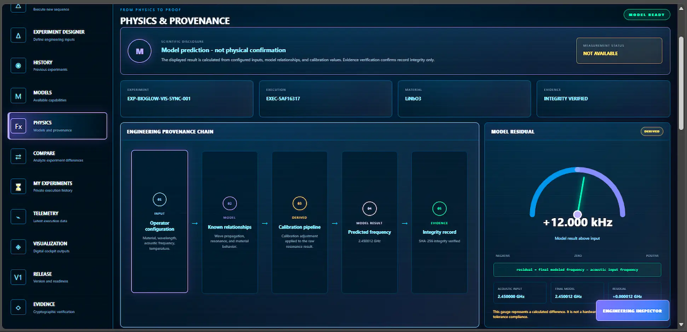
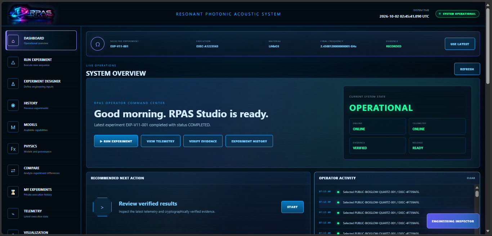
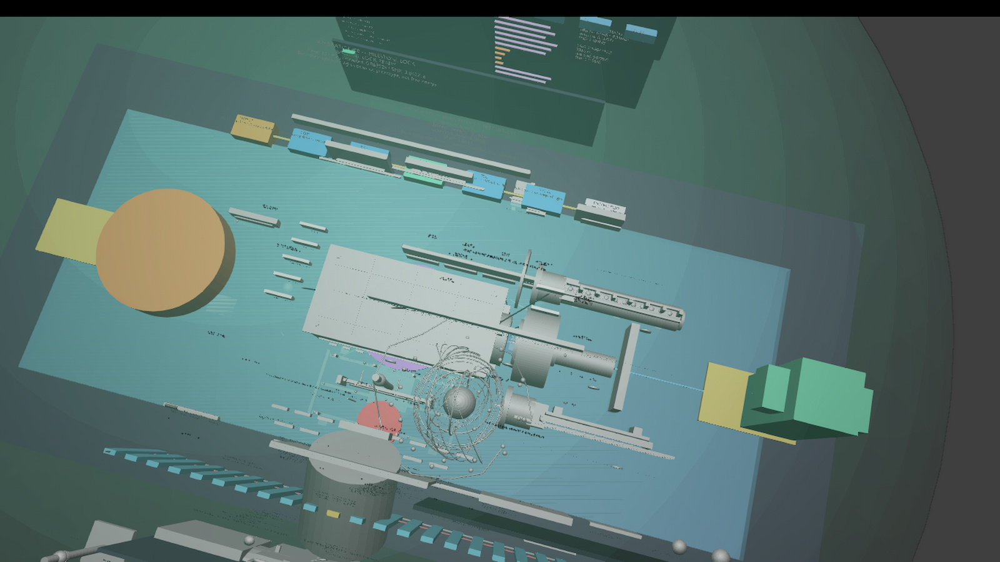

Scientific Relationship Analysis
Explore where experiments connect, differ or cannot be directly compared. A shared topic does not automatically mean shared physical mechanisms or equivalent measurements.
From Isolated Experiments to Connected Scientific Knowledge.
RPAS Studio is an emerging scientific engineering platform exploring how experimental measurements, physical models, and source-traceable evidence can be connected to support reproducible research and better-informed experimentation.
Research-stage platform. Built around evidence. Designed for collective progress.

Scientific findings are often dispersed across papers, notebooks, instruments, models and independent research projects. Our long-term vision is to make the relationships among them easier to examine without erasing the context that gives each measurement meaning.
The workflow below illustrates the intended research process. It is not a claim that every stage is currently automated or publicly available.

Explore where experiments connect, differ or cannot be directly compared. A shared topic does not automatically mean shared physical mechanisms or equivalent measurements.
Keep source references, experimental conditions, contributors, assumptions and derived calculations distinguishable from observed results.
Examine units, definitions, calibration, material properties, apparatus differences and uncertainty before treating numerical values as comparable.
Develop traceable calculation workflows, identify gaps in reported evidence, and prepare potential follow-up measurements for human review.
Work toward reproducible, properly attributed research connections while protecting private work and enabling intentional sharing.
Two experiments may report similar numbers and still measure different things. RPAS is being developed to help researchers see the conditions, calculations, uncertainty and provenance behind each result before drawing a connection.
Our initial research focus provides demanding test cases for experimental comparison: optical wavelength, acoustic frequency, excitation amplitude, geometry, material properties, orientation, controls, uncertainty and instrument response can all influence interpretation.
BioGlow investigates questions about incident light interacting with materials or optical structures under controlled mechanical or acoustic excitation. Established fields including acousto-optics, optomechanics and photon–phonon interactions form essential scientific context.
The current purpose is to document hypotheses, compare related literature, define controls, and distinguish simulated predictions from instrument measurements. No physical optical amplification is claimed as established.
Biolumen represents a developing research direction that can inform future evidence workflows. It is not advertised as a validated experimental service.
Expansion beyond optical–acoustic and photonic research is a longer-term objective, contingent on demonstrated reliability, domain-appropriate methods and scientific review.
RPAS Studio has simulation and experiment-management foundations, including interfaces for examining candidate configurations and physical relationships. Visualizations support reasoning and preparation; they do not demonstrate physical performance or replace laboratory validation.

RPAS Studio V1.1 includes experiment management, evidence-oriented workflows, simulation infrastructure, authentication and distinct private OWNER and USER experiences. The scientific analysis components below have preliminary development test results; they have not been verified as an integrated, publicly available end-to-end research service.
Developed to assess whether reported measurements can reasonably be compared, with attention to scientific context and constraints.
Developed to reconstruct supported published calculations from traceable source data and declared assumptions.
Developed to surface missing measurements, calibration details, uncertainties and other information needed for interpretation.
Research-stage planning component intended to outline evidence-informed experiment preparation and candidate follow-up measurements.
Verification boundary: These internal component tests do not establish production readiness, public dashboard integration, independent scientific validation, demonstrated optical amplification, a validated physical apparatus, patent status or superiority over other research platforms.
These phases describe development intentions, not delivery commitments or features available today.
Continue verifying existing experiments, evidence records, secure user boundaries and the preliminary scientific components.
Work toward reviewed, traceable comparison, reconstruction, gap-analysis and planning workflows, integrated with appropriate controls.
Explore opt-in contributions, attribution-aware evidence connections and collaboration; evaluate expansion to additional scientific domains only when justified.
Identify the published reference, context, model, parameters and limitations. Unknown calibration or missing methodology must remain visible.
Derived values must be traceable to documented equations and inputs. Simulation results are not laboratory observations.
Experimental claims require appropriately documented instrument observations, controls and uncertainty, with human review of the evidence.
Disagreement, uncertainty, negative results and non-comparable data are meaningful outcomes. RPAS does not convert a missing measurement into a positive finding, or a modeled result into proof of a physical apparatus.
Research ownership matters. Private engineering data should remain protected; any future contributed public evidence library must use intentional sharing, explicit attribution, provenance and clear publication boundaries. Collaborative services and their governance remain development goals, not blanket promises of current functionality.
RPAS Studio is independently developed by HaloCyberLife. Its approach is to recognize published prior work, credit original researchers, distinguish established physics from new hypotheses and retain evidence behind scientific decisions.
Collective progress does not require making every project public. The intended direction is to let researchers preserve their private work and contribute selected, appropriately documented findings only when they choose.
RPAS Studio is a research-stage project. The live studio and this public overview serve different purposes: the studio contains the current software experience; this page explains the scientific mission and planned research direction. Features described as planned may not be available in the live interface.